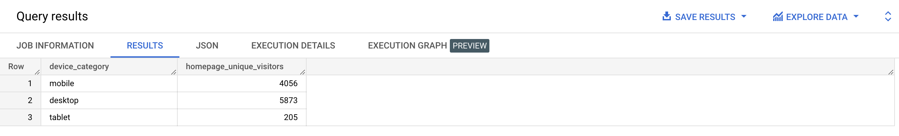

| Step | Clause | Description |
|---|---|---|
| 1 | FROM | Chooses the data to get the data from. |
| 2 | JOIN | Join tables. |
| 3 | WHERE | Filters the data. |
| 4 | GROUP BY | Aggregates the data. |
| 5 | HAVING | Filters the aggregated data. |
| 6 | SELECT | Returns the final data. |
| 7 | ORDER BY | Sorts the final data. |
| 8 | LIMIT | Limits the number of rows displayed. |
WITH customer_count AS
( SELECT COUNT(*) AS c_count
FROM
( SELECT DISTINCT user_id
FROM bigquery-public-data.thelook_ecommerce.orders
)
),
user_count AS
( SELECT COUNT(*) AS u_count
FROM bigquery-public-data.thelook_ecommerce.users
)
SELECT *
FROM customer_count
CROSS JOIN user_count; -- customer_count, join user_count;
WITH customer_count AS
( SELECT COUNT(*) AS c_count
FROM
( SELECT DISTINCT user_id
FROM bigquery-public-data.thelook_ecommerce.orders
)
),
user_count AS
( SELECT COUNT(*) AS u_count
FROM bigquery-public-data.thelook_ecommerce.users
)
SELECT customer_count.c_count,
user_count.u_count,
customer_count.c_count / user_count.u_count * 100 AS customer_percentage
FROM customer_count
CROSS JOIN user_count; -- customer_count, join user_count
SELECT event_params
FROM bigquery-public-data.ga4_obfuscated_sample_ecommerce.events_20210131
WHERE event_date = '20210131'
AND event_timestamp = 1612069510766593
AND event_name = 'page_view'
AND user_pseudo_id = '1026454.4271112504';
SELECT user_pseudo_id, event_name, event_params
FROM bigquery-public-data.ga4_obfuscated_sample_ecommerce.events_20210131
WHERE event_date = '20210131'
AND event_timestamp = 1612069510766593
AND event_name = 'page_view'
AND user_pseudo_id = '1026454.4271112504';
SELECT user_pseudo_id, event_name, unnested_params
FROM bigquery-public-data.ga4_obfuscated_sample_ecommerce.events_20210131
CROSS JOIN UNNEST(event_params) AS unnested_params
WHERE event_date = '20210131'
AND event_timestamp = 1612069510766593
AND event_name = 'page_view'
AND user_pseudo_id = '1026454.4271112504';
SELECT user_pseudo_id, event_name, unnested_params
FROM bigquery-public-data.ga4_obfuscated_sample_ecommerce.events_20210131,
UNNEST(event_params) AS unnested_params
WHERE event_date = '20210131'
AND event_timestamp = 1612069510766593
AND event_name = 'page_view'
AND user_pseudo_id = '1026454.4271112504';
bigquery-public-data.ga4_obfuscated_sample_ecommerce.events_*

SELECT device.category AS device_category,
COUNT(DISTINCT user_pseudo_id) AS homepage_unique_visitors
FROM `bigquery-public-data.ga4_obfuscated_sample_ecommerce.events_*`
CROSS JOIN UNNEST(event_params) AS unnested_params
WHERE event_name = 'page_view'
AND (_table_suffix BETWEEN '20210101' AND '20210131')
AND (unnested_params.key = 'page_location')
AND (unnested_params.value.string_value = 'https://googlemerchandisestore.com/')
GROUP BY device_category;
bigquery-public-data.ga4_obfuscated_sample_ecommerce.events_*
| unique_engaged_users |
|---|
| 86962 |
SELECT COUNT(DISTINCT user_pseudo_id) AS unique_engaged_users
FROM `bigquery-public-data.ga4_obfuscated_sample_ecommerce.events_*`
CROSS JOIN UNNEST(event_params) AS unnested_params
WHERE (_table_suffix BETWEEN '20210101' AND '20210131')
AND (unnested_params.key = 'engagement_time_msec')
AND (unnested_params.value.int_value > 0);